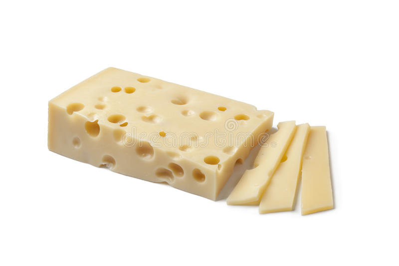
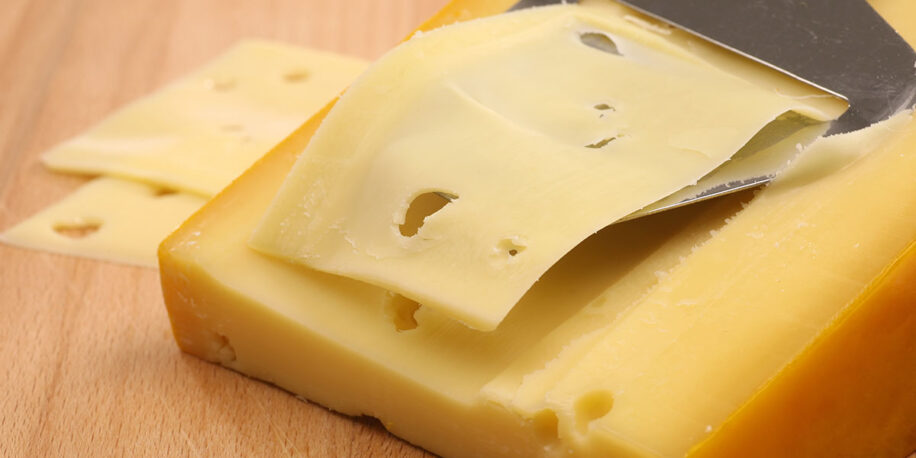

- Onverhitte geperste kaas, rauwmelkse kaas waarbij de gestremde melk geperst wordt en vervolgens gerijpt.
- Halfverhitte geperste kaas.
- Verhitte geperste kaas, Waarbij de gestremde melk eerst verhit wordt tot boven de 50 °C, vervolgens geperst en daarna gerijpt.
Harde (geperste) kazen
- Witschimmelkaas of witte korstkaas .
- Gewassenkorstkaas of roodbacteriekaas.
- Natuurlijke korstkaas door de samenstelling van de melk voornamelijk geitenkaas, waarbij de korst zich zonder menselijk toedoen tijdens de rijping vormt.
- graskaas
Zachte (ongeperste) kazen
Kaas waarbij het oppervlak wordt gewassen met een bepaald mengsel (bijvoorbeeld van polyvinylacetaat en natamycine), dat tijdens het rijpen een korst doet ontstaan en waarbij men de volgende typen kan onderscheiden:
- Verse kaas of smeerkaas (bijvoorbeeld Boursin).
- Geknede kaas (bijvoorbeeld Mozzarella).  
Korstloze kazen
Toegevoegde smaken
Aan kaas worden soms smaakstoffen toegevoegd, zoals komijn, kruidnagel. Roken van de kaas geeft ook een andere smaak. Schimmels en bacteriën kunnen kaas ook een speciale smaak geven.